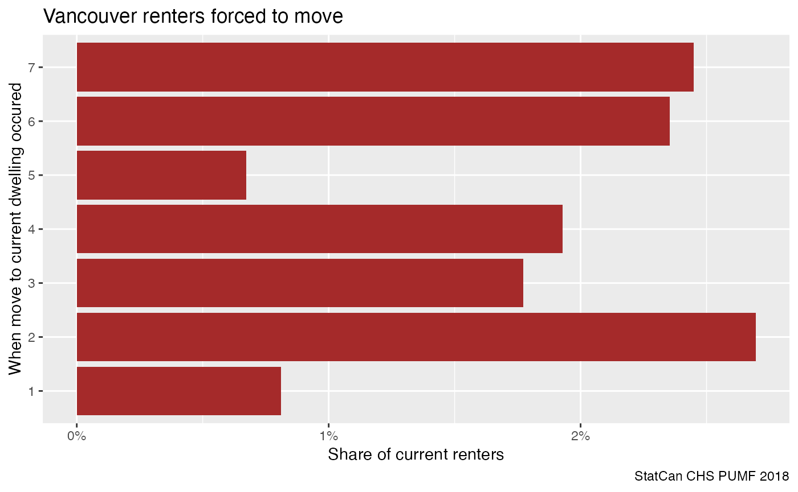
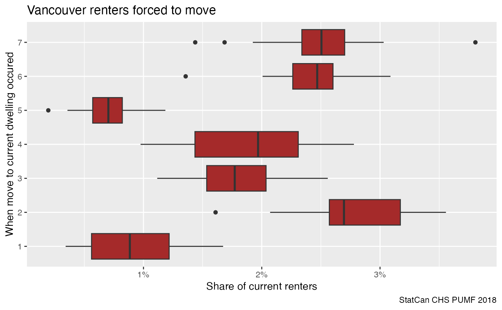
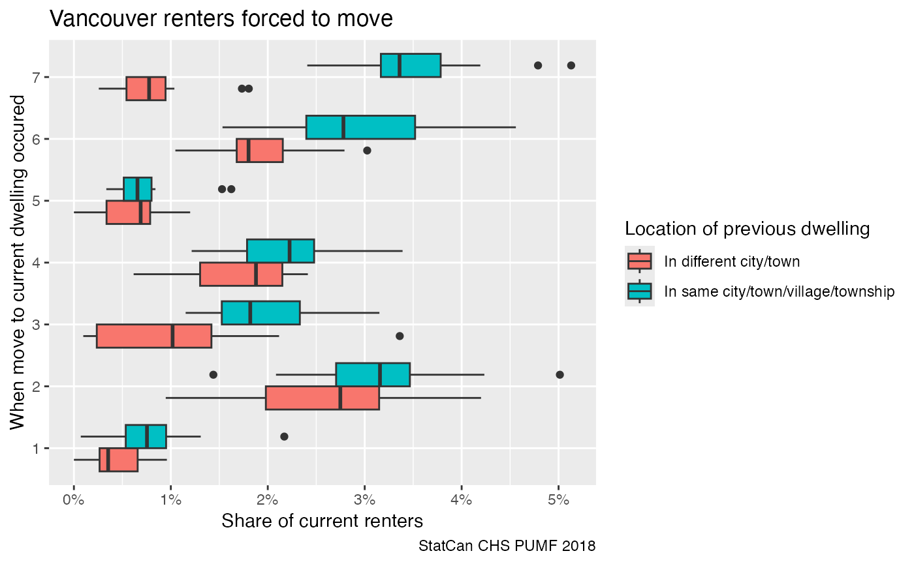
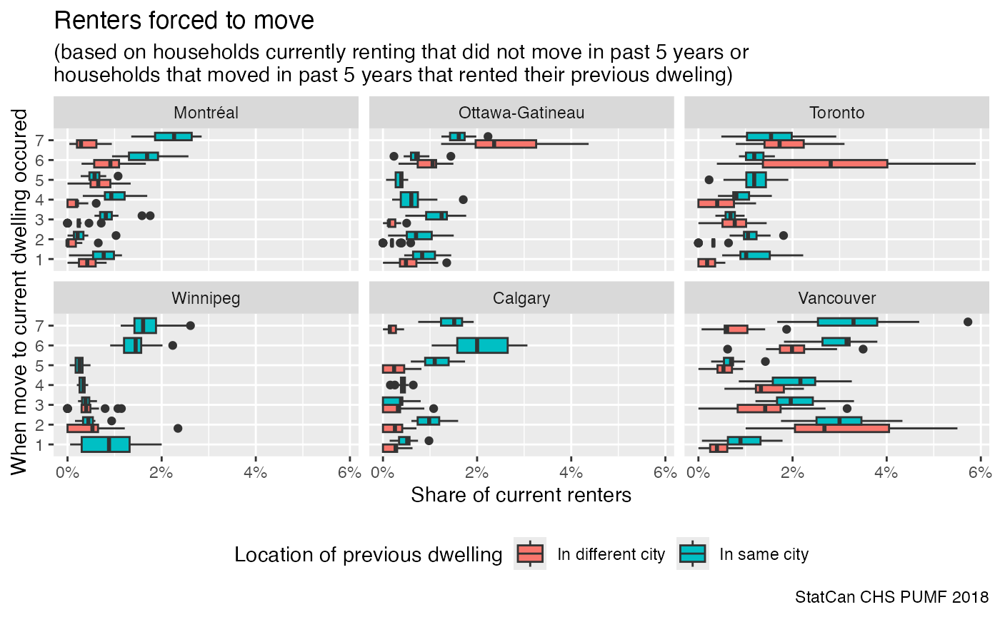

library(dplyr)
#>
#> Attaching package: 'dplyr'
#> The following objects are masked from 'package:stats':
#>
#> filter, lag
#> The following objects are masked from 'package:base':
#>
#> intersect, setdiff, setequal, union
library(tidyr)
library(ggplot2)
library(canpumf)
options(canpumf.cache_path = Sys.getenv("COMPILE_VIG_CANPUMF"))The Canadian Housing Survey PUMF data is a rich dataset on Canadian housing preferences and needs. This vignette is adapted from work done by Nathan Lauster and Jens von Bergmann.
chs_pumf <- get_pumf("CHS","2018") |>
label_pumf_data() Forced moves
We take a simple look at the share of current renters that were forced to move on their most recent move, keyed by when the most revent move occured. To estimate risk of being forced to move we look at all current renters that did not move in the five years prior to the CHS, or those that moved in the prior five years and were reners in their old accommodation, as a base and ask what share of these were forced to move in a given timeframe.
renter_chs_pumf <- chs_pumf %>%
mutate(`Previous accommodations - when move to current dwelling occurred`=as.character(`Previous accommodations - when move to current dwelling occurred`)) %>%
filter((Tenure == "No" &
grepl("10",`Previous accommodations - when move to current dwelling occurred`)) |
(!grepl("10",`Previous accommodations - when move to current dwelling occurred`) &
`Previous accommodations - tenure`=="Rent it"))We will also focus on people that did move in the past 5 years, as recall bias might make data from longer timeframes less reliable and the reproted time windows get large.
plot_data <- renter_chs_pumf %>%
filter(`Geographic grouping`=="Vancouver") %>%
group_by(`Previous accommodations - when move to current dwelling occurred`,
`Previous accommodations - forced to move`) %>%
summarise(value=sum(`Household weight`),.groups = "drop") %>%
mutate(share=value/sum(value)) %>%
filter(`Previous accommodations - forced to move`=="Yes",
!grepl("10",`Previous accommodations - when move to current dwelling occurred`))
ggplot(plot_data,aes(x=`Previous accommodations - when move to current dwelling occurred`,y=share)) +
geom_bar(stat="identity",fill="brown") +
coord_flip() +
scale_y_continuous(labels=scales::percent) +
labs(title="Vancouver renters forced to move",
x="When move to current dwelling occured",
y="Share of current renters",
caption="StatCan CHS PUMF 2018")
This looks interesting in that there seem to be distinct periods when the frequency of being forced to move changed, recognizing that longer ago breackets are conditional on not having moved after.
With PUMF data we need to be aware that we are dealing with a
synthetic sample that has been altered from the original survey
repsonses for privacy reasons. With that, and the general unvertainty
when dealing with survey data, it is important to assess how good these
estimates are. A simple way to do this is to add bootstrap weights,
which is facilitated via the add_bootstrap_weights
function.
plot_data <- renter_chs_pumf %>%
add_bootstrap_weights(weight_column = "Household weight", seed=42) %>%
filter(`Geographic grouping`=="Vancouver") %>%
group_by(`Previous accommodations - when move to current dwelling occurred`,
`Previous accommodations - forced to move`) %>%
summarise(across(matches("BSW\\d+|Household weight"),sum),.groups="drop") %>%
pivot_longer(matches("BSW\\d+|Household weight"),names_to="weights") %>%
group_by(weights) %>%
mutate(share=value/sum(value)) %>%
filter(`Previous accommodations - forced to move`=="Yes",
!grepl("10",`Previous accommodations - when move to current dwelling occurred`))
ggplot(plot_data,aes(x=`Previous accommodations - when move to current dwelling occurred`,y=share)) +
geom_boxplot(fill="brown") +
coord_flip() +
scale_y_continuous(labels=scales::percent) +
labs(title="Vancouver renters forced to move",
x="When move to current dwelling occured",
y="Share of current renters",
caption="StatCan CHS PUMF 2018")
This shows that the changes in frequency of forced moves are fairly robust to sampling issues. The initial jump and then final reduction in risk of being forced to move are interesting, the final reduction may be due to the strengthening of the residential tenancy act in that timeframe.
Another complication when interpreting the data is that the previous accommodation where current renters were forced to move from may have been in a different metro are. The CHS does have some data on the location of the previous residence, but only note if it was in the same or a different city, not metro area. We can add this variable in to see what effect it has.
plot_data <- renter_chs_pumf %>%
add_bootstrap_weights(weight_column = "Household weight", seed=42) %>%
filter(`Geographic grouping`=="Vancouver") %>%
group_by(`Previous accommodations - when move to current dwelling occurred`,
`Previous accommodations - location of previous dwelling`,
`Previous accommodations - forced to move`) %>%
summarise(across(matches("BSW\\d+|Household weight"),sum),.groups="drop") %>%
pivot_longer(matches("BSW\\d+|Household weight"),names_to="weights") %>%
group_by(`Previous accommodations - location of previous dwelling`,
weights) %>%
mutate(share=value/sum(value)) %>%
filter(`Previous accommodations - forced to move`=="Yes",
!grepl("10",`Previous accommodations - when move to current dwelling occurred`)) %>%
mutate(`Location of previous dwelling` = gsub("\\.\\.\\..+$","",`Previous accommodations - location of previous dwelling`))
ggplot(plot_data,aes(x=`Previous accommodations - when move to current dwelling occurred`,
fill=`Location of previous dwelling`,
y=share)) +
geom_boxplot(position="dodge") +
coord_flip() +
scale_y_continuous(labels=scales::percent) +
labs(title="Vancouver renters forced to move",
x="When move to current dwelling occured",
y="Share of current renters",
caption="StatCan CHS PUMF 2018")
Here we see the frequency of forced moves is slightly elevated for people moving within the same city. It will take more digging through the data to see what might cause this.
One way to contextualize this is to compare it to other Canadian CMAs.
plot_data <- renter_chs_pumf %>%
add_bootstrap_weights(weight_column = "Household weight", seed=42) %>%
filter(`Geographic grouping` %in% c("Vancouver","Toronto","Montréal","Calgary","Ottawa-Gatineau","Winnipeg")) %>%
group_by(`Previous accommodations - when move to current dwelling occurred`,
`Previous accommodations - location of previous dwelling`,
`Geographic grouping`,
`Previous accommodations - forced to move`) %>%
summarise(across(matches("BSW\\d+|Household weight"),sum),.groups="drop") %>%
pivot_longer(matches("BSW\\d+|Household weight"),names_to="weights") %>%
group_by(`Previous accommodations - location of previous dwelling`,
`Geographic grouping`,
weights) %>%
mutate(share=value/sum(value)) %>%
filter(`Previous accommodations - forced to move`=="Yes",
!grepl("10",`Previous accommodations - when move to current dwelling occurred`)) %>%
mutate(`Location of previous dwelling` = gsub("\\/town.+$","",`Previous accommodations - location of previous dwelling`))
ggplot(plot_data,aes(x=`Previous accommodations - when move to current dwelling occurred`,
fill=`Location of previous dwelling`,
y=share)) +
geom_boxplot(position="dodge") +
coord_flip() +
facet_wrap("`Geographic grouping`") +
theme(legend.position = "bottom") +
scale_y_continuous(labels=scales::percent) +
labs(title="Renters forced to move",
subtitle="(based on households currently renting that did not move in past 5 years or\nhouseholds that moved in past 5 years that rented their previous dweling)",
x="When move to current dwelling occured",
y="Share of current renters",
caption="StatCan CHS PUMF 2018")
This shows that patterns vary across cities, Calgary’s elevated rate of forced moves in four to five year timeframe may be due to the heated up of the rental market during the boom phase at that time, where rent hikes and lack of rent control may have forced people to move.
This data is worth exploring further, but for the example vignette this will have to do.